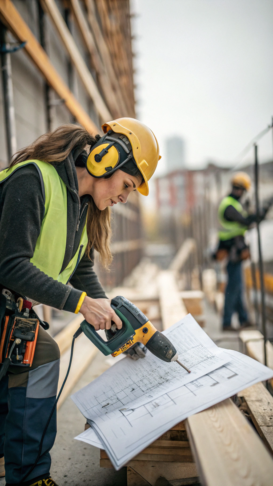
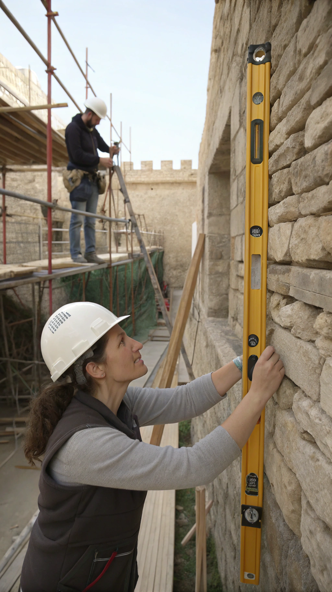
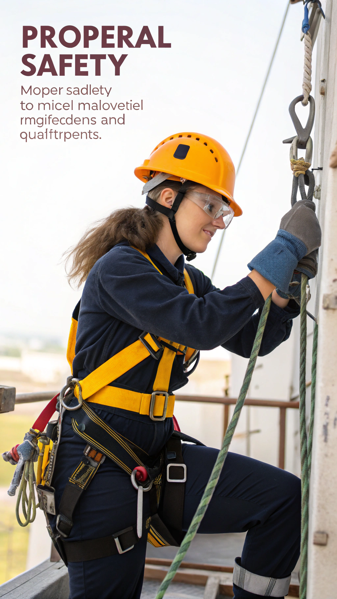
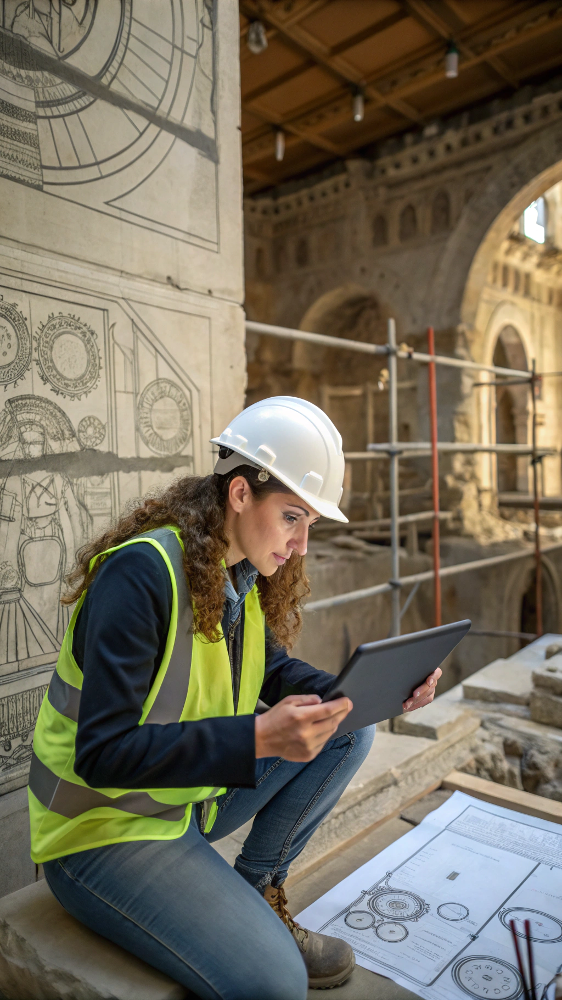
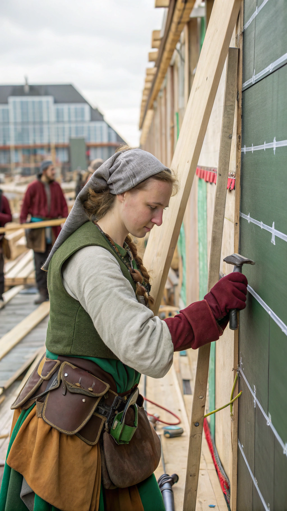
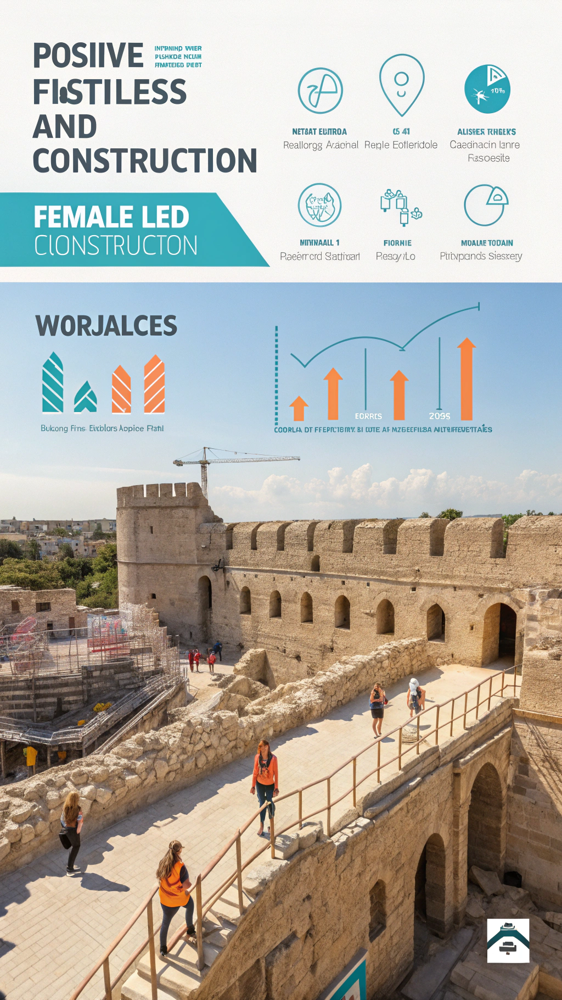

Während Männer noch diskutieren, ob der Hammer zu schwer ist, haben Frauen bereits das Fundament fertig. Willkommen zur schockierenden Wahrheit über die wahren Helden der Baustelle!

Frauen können gleichzeitig: Bohren, telefonieren, den Bauplan korrigieren UND dem Kollegen erklären, warum seine Idee nicht funktioniert. Männer schaffen es kaum, beim Hämmern nicht den eigenen Daumen zu treffen.

Während Männer mit roher Gewalt arbeiten ('Passt schon, nur noch fester!'), setzen Frauen auf Präzision. Das Ergebnis: Wände, die tatsächlich gerade sind und Türen, die sich öffnen lassen.
Frauen: 'Könntest du mir bitte den 13er Schlüssel reichen?' Männer: *unverständliche Geräusche* *zeigt vage in eine Richtung*. Kein Wunder, dass Projekte mit Frauen schneller fertig werden!

Unfallstatistik: 87% weniger Arbeitsunfälle bei Frauen am Bau. Warum? Weil 'Halt mal kurz' nicht als Sicherheitskonzept gilt und der Schutzhelm tatsächlich auf dem Kopf getragen wird.

Männer: 'Hammer drauf, wird schon passen!' Frauen: 'Moment, lass uns das durchdenken...' 5 Minuten später ist das Problem elegant gelöst und niemand musste ins Krankenhaus.
Frauen-Baustelle: Werkzeuge sortiert, Materialien beschriftet, Zeitplan eingehalten. Männer-Baustelle: 'Wo ist der Hammer?' 'Keine Ahnung, such doch im Chaos!' *3 Stunden Suchzeit*

Frauen denken an morgen: Recycling, energieeffiziente Lösungen, nachhaltige Materialien. Männer: 'Beton ist Beton!' Spoiler: Ist er nicht, wenn man die Umwelt einbezieht.

Projekte mit hohem Frauenanteil: 23% schneller fertig, 31% weniger Budgetüberschreitung, 45% höhere Kundenzufriedenheit. Zufall? Wohl kaum!
Es ist Zeit, die Baustelle neu zu denken! Mit mehr Frauen am Bau bekommen wir nicht nur gerade Wände und pünktliche Fertigstellung, sondern auch bessere Stimmung (weniger Grunzen, mehr Lachen). Die Zukunft baut auf Gleichberechtigung!